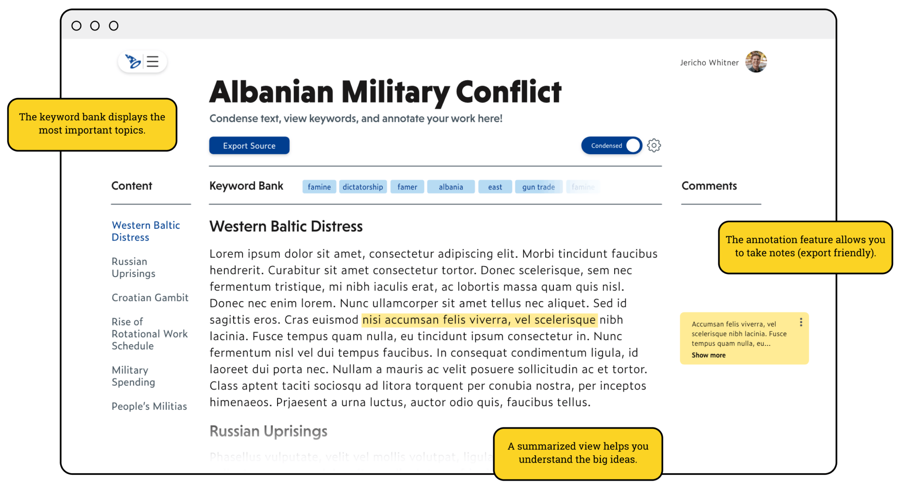
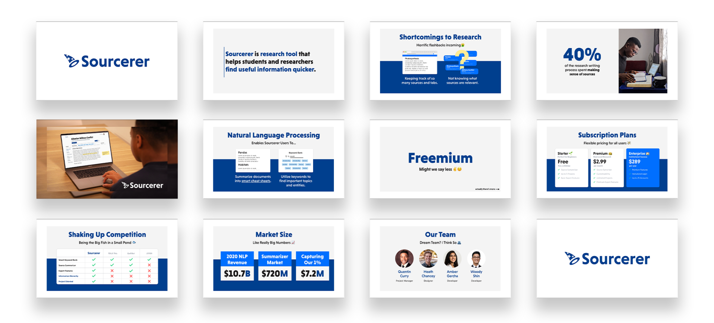
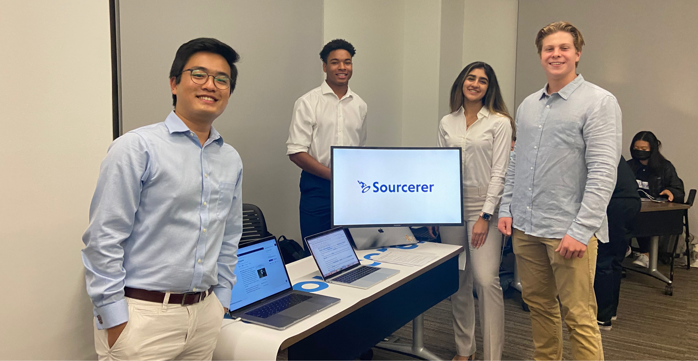

Fall 2021
SOURCERER
Project oriented research tool that helps individuals find useful information quicker through creating smart cheatsheets with the help of NLP.
Product Design and Management
The Problem
Doing research for projects and papers is a time consuming process that can often leave students and researchers overwhelmed by the sources they have to digest. Common pitfalls students and researchers encounter is that they don’t know how to properly utilize information because they don’t know what sources are relevant.
Challenge and Opportunity
How can we help students and researchers find information that is beneficial to their topic?
Product Overview
Sourcerer is a project oriented research tool that helps individuals find useful information quicker through using natural language processing to create smart cheatsheets.
Building Smart Cheatsheets
Here is where the magic happens. Individual sources will be summarized into organized cheatsheets. With the help of a contents bar and a keyword bank, users will be able to find important info, quicker.
Project Oriented Homepage
Understanding individuals need to have a place to view all their projects is helpful when researching, we sought to speed up the user’s journey by prioritizing certain actions such as returning to most recent projects through making those buttons stand out in the page hierarchy.
All Your Sources In One Place
Once users have a specific project created, they have the ability to add sources through importing webpages, documents, or just pasting information into a blank field. After users have condensed their sources, they have the option to export them in a combined cheatsheets.
Summarize and Add Sources With Chrome
With the help of a Chrome Extension, users won’t miss a beat when researching. Individuals can see a summarized view and add their sources to projects all from a dropdown window.
Case Study
As the team is is students, we wanted to address the shortcomings to researching and studying.
Initial Findings
To start our research, we conducted a survey so that we could get some insight into where most students were faultering. From this, we found that organization and comprehension were two big components to solving the problem.
35%
of study time is spent condensing or gathering notes
45%
of time writing a paper is spent making sense of information
User Painpoints
Viewing all of the content in an efficient way
Making sense of all of the information at hand
Losing direction for where to take the research paper
Paraphrasing information and utilizing it is difficult
Not know what information is important or is fluff
Areas Researchers Need Help
1. An easier way they could compile sources and notes into a page.
2. A better way to organize sources.
Determininng Features
After listening to our intended audience, we took to the whiteboard to understand what features would be essential to our project. We then wrote out solutions from our own ideas and from what students wanted. From here, we matched interview and survey responses to features to best understand what was needed.
Features
Cheatsheet
Keyword Bank
Export Features
Source Collections
Annotation Space
Chrome Extension
User Workflow
Pitch Deck
Conclusion
After about a 5 week long grind (the other 5 were spent pivoting ideas), the team finished strong on Demo Night where we pitched Sourcerer and showed off our functional prototype. With commitment levels on the project varying, we decided to not continue development on Sourcerer. Although this is true, I will look back on this experience not only knowing I grew as a designer but also having gained memories with my team that I will cherish forever.
